Stella-Plage 2004 : Cerf-Volant-Mania

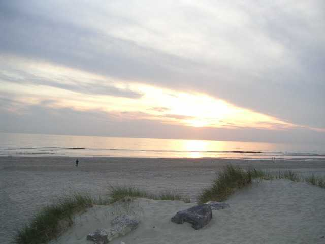
Vendredi soir : la superbe plage de Stella se fait belle pour la nuit, en prévision de lendemains qui décoiffent !

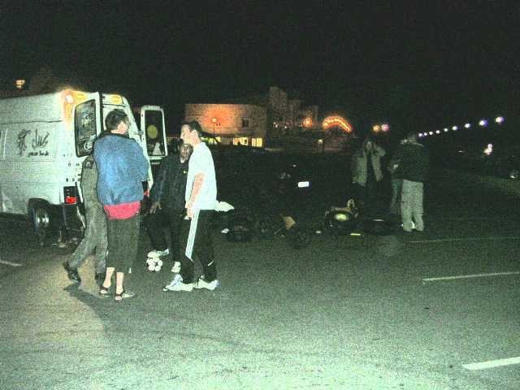
Ca ne manque pas, à 9 h du soir les fous commencent à arriver : les Pirates, les Gwenn-Ha-Du, les Pilotes de ligne, et déballent du matériel lourd pour pouvoir rouler et se défoncer. Ils déballent aussi pour pouvoir dormir dans les camions...

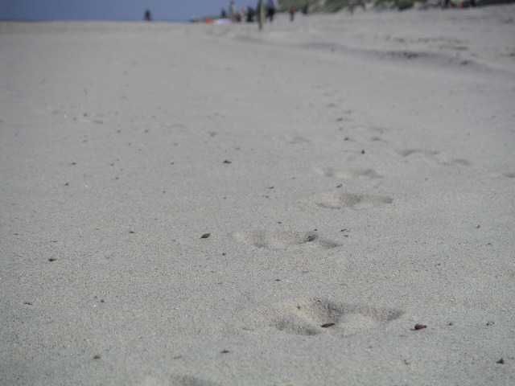
Au petit matin, beau temps, la plage est encore presque vierge... plus pour très longtemps !

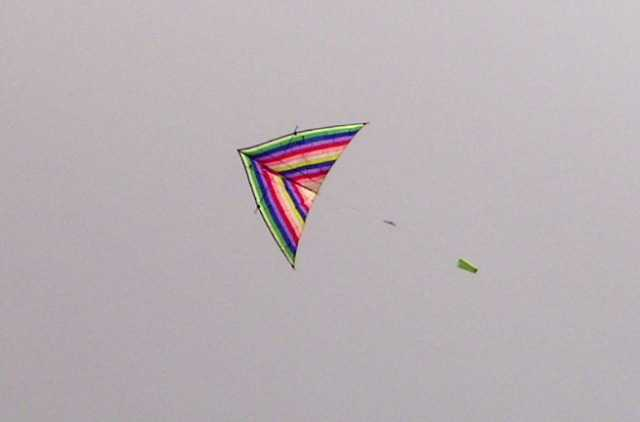
Et les cerfs-volants envahissent la plage, petit à petit tout au long de la matinée !

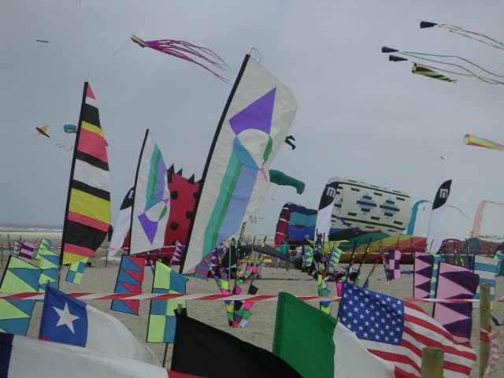

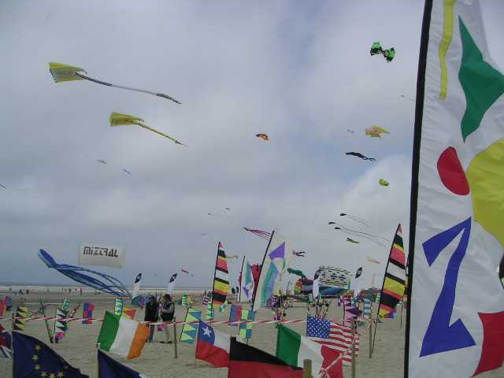
Des bannières non plus, il n'en manque pas !

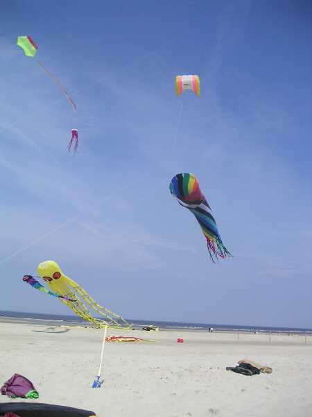
Il y a des CV de taille, comme les pieuvres, les flow-forms,

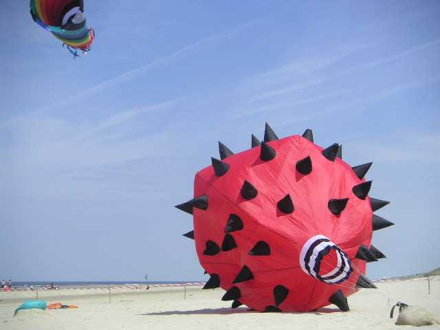
...un gros Fugu, de 5 ou 6 m de "diamètre" (il n'est pas vraiment sphérique, plutôt icosaédrique ?), mais ça doit être un Fugu des grandes profondeurs, sans yeux ni nageoires... Malheureusement il a fallu plier le bol qui arrachait de son trou le sac de sable de 200 kg qui servait d'ancrage.

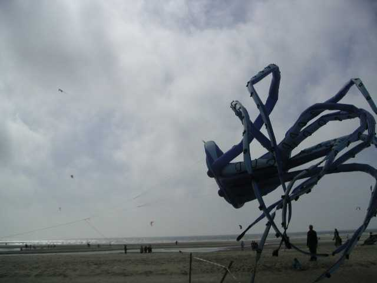
Une très grande pieuvre se bagarre contre les caprices du vent, en essayant de tout emporter dans ses tentacules (et y parvient parfois..)

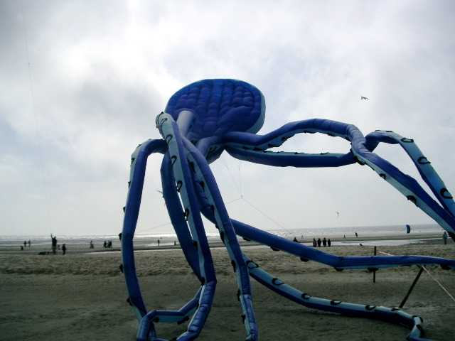

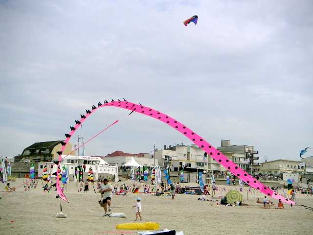
Au milieu du capharnaüm, une arche continue se maintient, d'abord aidée par une retenue centrale,

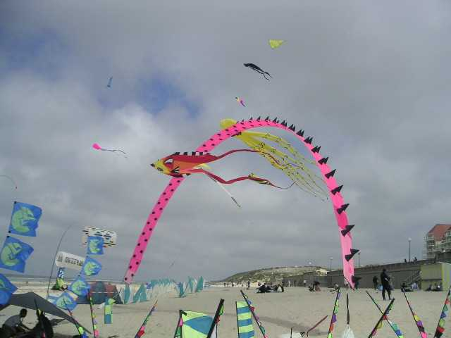
...puis complètement libre, ce qui représente une belle performance des créateurs et régleurs.

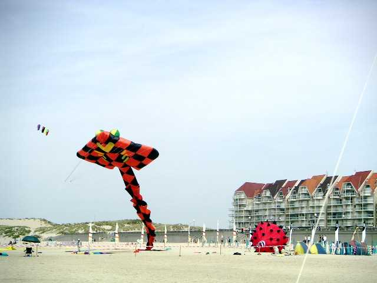
Une énorme raie de 40 m de long vole selon la météo, quelquefois en balayant tout sur son passage, bien que son créateur dégage progressivement la barrière, la première rangée de bannière, la deuxième, et refoule les baigneurs inconscients (mais Logos a résisté stoïquement à une chute de raie sur la tente, deuxième à droite sur la photo).

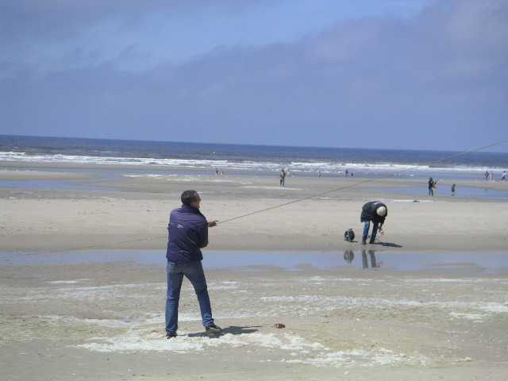
...Son créateur l'a réalisée tout seul, ce qui représente quelques kilomètres de couture et une gageure bien digne d'être saluée.

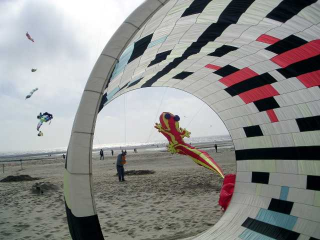
Jules faisait voler son "CircoFlex long", au comportement aussi joueur que d'habitude.

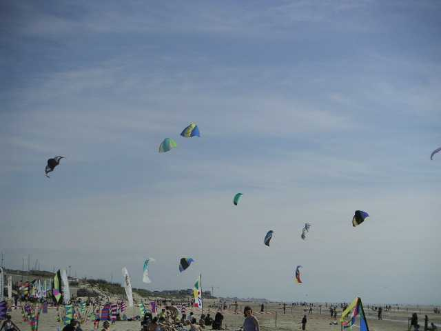
Mais la surface de démonstration a été principalement consacrée à de nombreux concours de pilotables. Seulement, le vent était souvent un peu trop faible, quoique venant de la mer ce qui le rendait bien lisse. Alors les "tractionnistes", qui ne pouvaient pas rouler de toutes façons ont été appelés à faire un show Traction très impressionnant par le volume occupé, par la majesté des évolutions et la proximité des voiles "au contact" du public.
Hors antenne, lors d'un phase plus ventée, un léger malentendu a couté un envoi (provisoire, il était pansé mais debout le soir) à l'hosto d'un chariste, et l'immobilisation prolongée de 2 chars, les tubes en inox de diamètre 70 mm n'ayant pas résisté à un choc à angle droit à bonne vitesse !

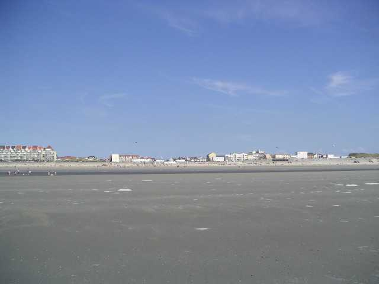
Enfin, le soir après le combat de Rokkakus à 19h30 (!), il a bien fallu tout plier et rendre l'immense plage à sa liberté.

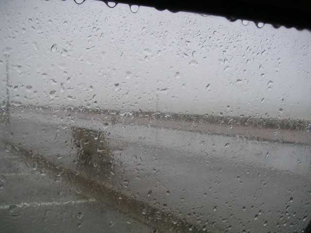
Pour information, il a fait beau (enfin presque) pendant les 3 jours. Mais on l'a échappé belle, voilà ce qu'on aurait pu avoir à affronter et qui est arrivé dès mardi matin à la première heure =>